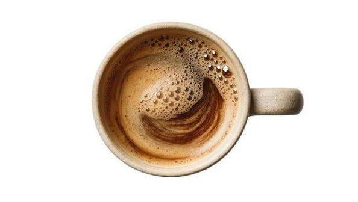
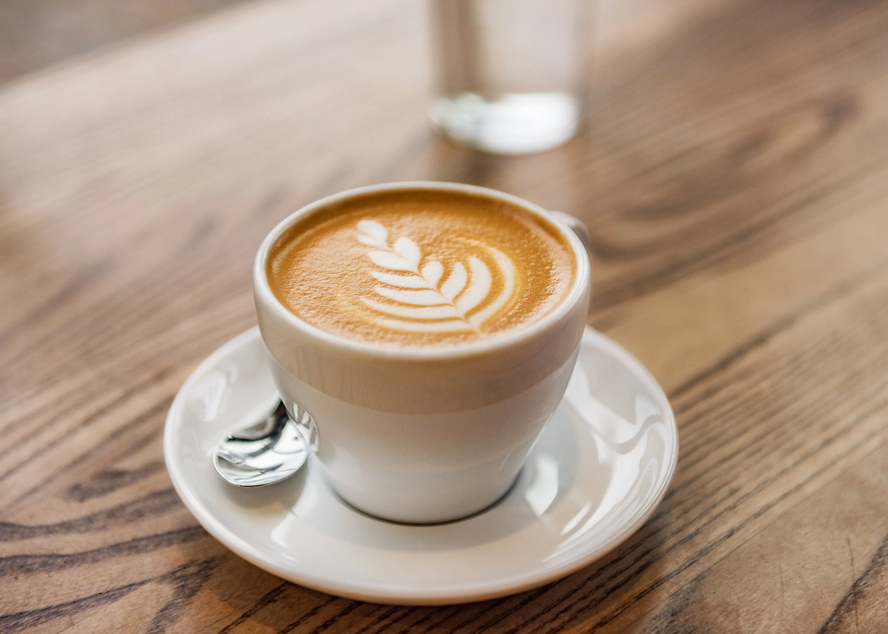
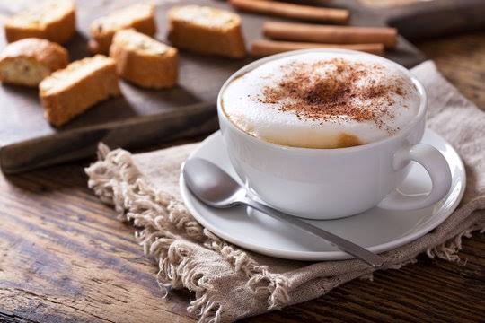
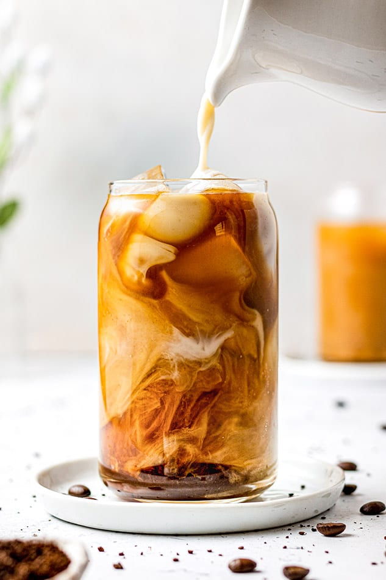

A Guide to Coffee
What Makes Coffee Drinks Different?
Coffee is one of the most popular drinks around the world, but not every cup is made the same way. Some drinks are strong and concentrated, while others contain milk, foam, or ice. The brewing method and ingredients can make a big difference in how each coffee tastes.
There are so many different ways to enjoy coffee. Here are four popular drinks and what makes each one unique.
Popular Coffee Drinks
Espresso

Espresso is made by forcing hot water through finely ground coffee under pressure. It is usually served in a small cup because it has a strong, concentrated flavor. Espresso is also used as the base for many other coffee drinks, including lattes and cappuccinos.
Latte

A latte is made with espresso and steamed milk, with a thin layer of foam on top. Since it contains a lot of milk, it has a smoother and creamier taste than espresso on its own. Lattes can also be served iced, and many people add flavors like vanilla or caramel.
Cappuccino

A cappuccino is made with espresso, steamed milk, and a thicker layer of milk foam. It is similar to a latte, but it usually contains less liquid milk and more foam. This gives it a stronger coffee taste and a lighter texture.
Cold Brew

Cold brew is made by soaking ground coffee in cool or room-temperature water for several hours. The coffee is then filtered and usually served over ice. Unlike regular iced coffee, which is often brewed hot before being cooled, cold brew is made without hot water.
How They're Made
Espresso, lattes, and cappuccinos all begin with espresso, but the amount of milk and foam changes the final drink. Cold brew uses a completely different method because the coffee grounds sit in cool water for a much longer time.
Even when coffee drinks start with similar ingredients, the way they are prepared can change their flavor, texture, and strength.
Finding Your Favorite Coffee
Everyone has their own coffee preference. If you like strong coffee, espresso might be your favorite. If you prefer something creamier, you might enjoy a latte or cappuccino. Cold brew is a great option for people who like their coffee cold. Trying different drinks is a fun way to figure out what you enjoy most.